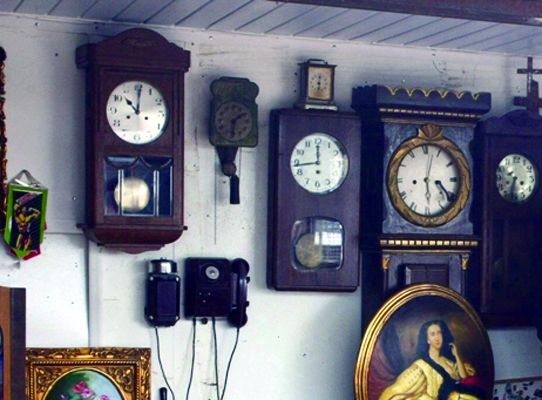
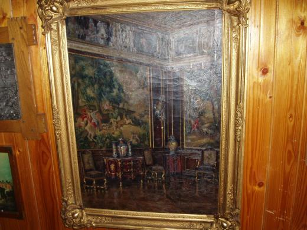
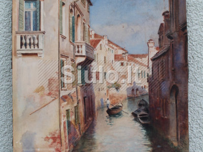

Antikvariniai daiktai, kurie privers patikėti vaiduokliais | PrieKavos.lt
2020.10.30 04:30

Antikvariniai daiktai, kurie privers patikėti vaiduokliais | PrieKavos.lt
Žurnalai
Home Sveikata ir grožis Stilius Grožis Sveikata Kūnui ir sielai Natūralioji medicina Natūrali medicina Žurnalas Be vaistų Vaistinėlė Kitu kampu Ekologija Būrėja Būrėja Žurnalas Psichologijos magija Žurnalas Kitas žvilgsnis Paslapčių skrynia Praktinė magija Tarp realybės ir fantazijos Skanaus Sveika ir skanu Salotos Užkandžiai Sriubos Karšti patiekalai Magiški patiekalai Desertai Gėrimai Viskas apie TV naujienos Įdomu Istorijos Įdomybės Kelionės Legendos Pažintys Patarimai Mano patarimai Žurnalas Gyvūnai Psichologija Rankdarbiai Vaikai S Būrėja > Būrėja | Kitas žvilgsnis | Magija ir burtai | Paslapčių skrynia | Praktinė magija | Tarp realybės ir fantazijosAntikvariniai daiktai, kurie privers patikėti vaiduokliais
2017-07-10 15:39Visame pasaulyje yra žmonių, kurie mėgsta senienas arba antikvarinius baldus, papuošalus ir kitus daiktus. Tačiau šie daiktai, nors neretai originalūs ir vienetiniai, turi kai ką nenumatyto. Labai dažnai, kai žmogus nusiperka antikvarinį daiktą, kartu su juo parsineša namo ir vaiduoklį. Egzistuoja daugybė istorijų apie paranormalius reiškinius, prasidėjusius namie po to, kai namų savininkai įsigijo senovišką baldą ar rakandą. Štai keletas antikvarinių daiktų, kuriuos įsigijusiems žmonėms teko susidurti su paslaptingomis antgamtinėmis jėgomis.
5 antikvariniai daiktai, kurie privers patikėti vaiduokliais:
Elektrinė kėdė. Tai buvo kėdė nepanaši į jokią kitą kėdę. Vienas žmogus užėjo į antikvarinių daiktų parduotuvę. Parduotuvėje jis ranka užkliudė kėdę ir pajuto, kad plaukeliai ant jo rankos pasistojo piestu, tarsi kėdė būtų turėjusi kokį nors elektros krūvį. Praėjus šiek tiek laiko, plaukeliai atsipalaidavo. Sutapimas? O galbūt ne?
Depresijos žiedas. Kartą britei Maria Roberts priklausė antikvarinis žiedas su safyru. Tačiau kiekvieną kartą, kai ji turėdavo fizinį kontaktą su šiuo žiedu, ji iškart pasijusdavo nusiminusi, prislėgta. Moteris net girdėjo ir matė autentiškus ženklus apie labai liūdną Viktorijos laikų moterį. Neapsikentusi žiedo prakeiksmo, Maria Roberts pardavė žiedą ir niekada dėl šio sprendimo nesigailėjo.
Portretas, vaizduojantis didelį sielvartą (skausmą) patiriantį žmogų. Tai nutapytas portretas, kaip manoma, prišaukiantis dvasias iš anapusinio pasaulio. Portretas nutapytas aliejiniais dažais ir su paties dailininko krauju. Netrukus po to, kai portretas buvo baigtas, menininkas nusižudė. Portretą antikvarinių daiktų parduotuvėje įsigijo Seanas Robinsonas. Vyras netrukus pradėjo skųstis dėl keistų paranormalių reiškinių. Štai ką jis sakė: „Palikau įjungtą kamerą laisvame miegamajame, kuriame kabojo portretas. Kamera nuo 1 nakties iki 5 ryto įrašė keistus garsus tris nakties iš eilės, o antrą naktį triukšmas pasigirdo lygiai 3 valandą 25 minutės. Be to, vaizdo kameroje matėsi sklandantis virš paveikslo neaiškios kilmės šviesulys“. Paveikslas buvo taip pastatytas, kad jis negalėjo savaime baladotis į sieną. Vyras taip pat teigė pastebėjęs keistą miglą laiptų viršuje, tarsi būtų apgaubtas dūmų, pajuto stingdantį šaltį, kuris truko labai trumpai ir dingo taip pat staiga, kaip ir atsiradęs.
Vestuvinė suknelė, kuri pati šoka. 1849 mergina iš turtingos šeimos, Anna Baker, įsimylėjo paprastą darbininką. Jos tėvas nesutiko leisti dukteriai tekėti už šio žmogaus, liepė dukters mylimajam visam laikui palikti Pensilvanijos (JAV) miestelį. Anna iki mirties pyko ant tėvo, nes ji daugiau niekada nebepamilo ir neištekėjo. Prieš tai, kai tėvas mylimuosius išskyrė, Anna buvo įsigijusi suknelę. Po merginos mirties suknelę įsigijo muziejus, kuri kartais, ypač per pilnatį, po stikline vitrina, pradėdavo savaime judėti. Kalbama, kad tada šoka vestuvine suknele apsirengusi nuotaka.
Užkeikta lėlė. 1896 metais berniukui iš Floridos tarnas, praktikuojantis juodąją magiją ir nemėgstantis jo šeimos, padovanojo keistą lėlę. Berniukui lėlė labai patiko ir jis dažnai su ja žaisdavo, kalbėdavosi. Tačiau netrukus žmonės pradėjo kalbėti, kad girdėjo, kad lėlė jam atsako vaiduoklišku balsu ir matyti, kaip ji juda lange, nors berniuko kambaryje nebūdavo. 1972 metais lėlės savininkas mirė ir jo namą nupirko kita šeima. Naujieji šeimininkai lėlę rado palėpėje ir pradėjo jos bijoti, net teigė, kad lėlėje įsikūnijusi piktoji dvasia yra grasinusi juos nužudyti.
Jūsų komentaras (Komentarų nėra)
Prisijungti:
Connect with:Komentavimas negalimas.
Susiję straipsniai
Opalas – kam prakeiksmas, o kam laimė
Įvairiomis spalvomis žaižaruojantis opalas pakeri iš pirmo žvilgsnio. Tačiau šis pusbrangis akmuo gali užtraukti nelaimę tam, kuris jį nešioja. Taisyklė, ko gero, negalioja tik kai kuriems Zodiako ženklams (Avinui, Vėžiui, Svarstyklėms, Vandeniui ir Žuvims). Opalas sustiprina minėtų Zodiako ženklų a...
PlačiauXIX amžiaus eliksyro paslaptis atskleista
Nuo senų laikų žmonės norėjo išlikti jauni ir sveiki, rasti stebuklingą gyvybės eliksyrą. Tačiau alchemikai, užsidarę savo laboratorijose, vietoj to, kad atrastų amžinos jaunystės paslaptį, padarė daug kitų, žmonijai svarbių atradimų, pavyzdžiui, atrado paraką ir fejerverkus. Vis dėlto jie buvo sukū...
PlačiauNatūralioji medicina
Putino uogos gali padėti nuo šimto ligų (+ receptas)
Kaip natūraliomis priemonėmis užkirsti kelią peršalimui?
Sveikatos problemos – ženklas iš aukščiau?
HOROSKOPAS
Šiandieninė sėkmė labai priklauso nuo jūsų žavesio ir gerbėjų palankumo. Ji bus akivaizdesnė, jei jūsų karjera susijusi su pramogų verslu, menais, vaikais, grožiu.
Sėkmę gali atnešti darbas arba santykiai, neperžengiantys jūsų dalykinio gyvenimo rėmų. Galite tikėtis reikšmingo nutikimo, pokyčių darbe. Konkrečių rezultatų galite sulaukti iš planuotų dalykinių susitikimų.
Šiandien aktyviai bendrausite. Tikėtina, kad sėkmingai megsite naudingus dalykinius ryšius. Tačiau bus nelengva suprasti kitus, nes jie linkę slopinti tikruosius savo jausmus ir impulsus.
Tikėtinos finansinės įplaukos arba išlaidos, susijusios su partneryste, palikimu, draudimu, paskolomis. Gali kilti noras atsikratyti nereikalingų, įgrisusių daiktų ar su jais susijusių prisiminimų. Taip ir padarykite.
Tai turėtų būti gana dalykiška diena. Užsispyrimas, valia atvers kelius į sėkmę. Jeigu žinote, ko norite, galite siekti. Galbūt priartėsite prie tikslo, kuris susijęs su užsieniu arba mokslu, karjera.
Profesinės, finansinės ambicijos arba susidomėjimas pasiturinčiu ar įtakingu asmeniu skatins konkrečiai veikti ir priimti atsakingą pasiūlymą. Dėl to įvyks nemenkų pokyčių.
Tikriausiai nemažai nuveiksite savo ir kitų labui, aplankysite seną bičiulį arba užmegsite naują svarbią pažintį. Sugebėsite prisitaikyti ir valdyti aplinkybes, megzti reikalingus pokalbius.
Kai kuriuos nesklandumus vaizduotėje išgyvensite giliau nei iš tikrųjų to verta tikrovė. Galbūt gausite anoniminį laišką, žinutę. Daugiau dėmesio skirkite šeimos nariams. Tai padės išsaugoti jei ne šilumą, tai bent tarpusavio supratimą.
Jums turėtų neblogai sektis, tik galbūt rimtiems darbams trukdys emocijos, padidėjęs jautrumas. Vakare galite pašykštėti sau ar kitiems kažko, kas suteiktų džiaugsmo, malonumo.
Šiandien jūsų sugebėjimai, valia bus nukreipti pinigams uždirbti. Galima tikėtis naudos iš komercinės veiklos. Galbūt pavyks pasirašyti naudingą sutartį.
Ši diena atneš įvairių dialogų, rimtų ir nerimtų kalbų poreikį, skatins pasikeisti nuomonėmis su artimos aplinkos žmonėmis, kolegomis. Būsite nusiteikę išklausyti kitus, patarti, suteikti pagalbą artimiesiems. Jūsų įtaka sustiprės.
Gali pasireikšti jūsų rūpestingumas, tačiau bus tam tikrų išskaičiavimų. Galbūt stengsitės įtikti kažkokiam žmogui, tikėdamiesi iš jo naudos. Tikėtinos išlaidos, susijusios su namų remontu.
Visų ženklų horoskopaiMagija ir burtai
Kas yra bloga akis? Simbolio reikšmė ir prasmė istorijoje
Pentagrama – užkoduota jėga
Įdomu
Vilniuje netrukus prasidės XXIII Tarptautinis akordeono festivalis
Įdomybės apie žmogaus anatomiją
TV naujienos
Nuolatinėje baimėje gyvenantys Kalvarijos gyventojai: košmaras suintensyvėja Lapkričio 1-ąją Aktorius Giedrius Savickas apie karjeros pradžią: kai nė vienas žmogus salėje nesijuokia – čia jau tragedija Muzikos prodiuseris Martynas Tyla: „Verslo laukia bankrotų banga“ Ekstremalaus vandens sporto vicečempionas Edgaras Riabko po katastrofa vos nesibaigusios avarijos: pagalvojau, kaip šeima gyvens be manęs Iš kriminalinio herojaus miela Panda tapęs aktorius Josif Baliukevič prisipažino: slėpti tokią paslaptį buvo išties sunku Netradicinės seksualinės orientacijos vargonininkę iš bažnyčios išvaręs klebonas: „Komunija – ne batonas” kunigas homoseksualiems žmonėms negailėjo sparnuotų posakių Monisha – apie košmarą vaikystėje: „Patėvis su medžiokliniu šautuvu sustatė mus į eilę ir liepė rinktis, kuris pirmas“ Sauliaus Skambino mylimoji Živilė: „Kalbos, kad Sauliaus santuoka iširo dėl manęs, labai žeidžia“ LNK „Kaukėse” atidengtas aktorius Josif Baliukevič: „Visada verta peržengti per save” N. Pareigytė-Rukaitienė šokiruota: net neįsivaizdavau, kad mano draugė K. Krysko taip moka slapukauti J. Zinkevičiūtė išbandė modernią estetinę procedūrą: „Sulaukus trisdešimties, imi labiau mylėti savo kūną“ Aktoriaus Juliaus Žalakevičiaus namuose – penki šunys Su II tipo cukriniu diabetu gyvenantis A. Ivanauskas-Fara atskleidė, kaip atrodo jo mityba: „Reikėjo mokytis gyventi iš naujo“ Sėkmingą startuolį įkūrusi lietuvė: didžiausia pradinė investicija yra laikas 120 parduotuvių valdžiusi milijonierė Ugnė Usevičiūtė į filmavimą LNK laidoje iš Radviliškio ėjo penkias dienasMano PrieKavos.lt
PrisijungtiŽurnalų Prenumerata
Prenumeruok internetu Visi žurnalai Apie mus | Reklama | Mūsų žurnalai | Žurnalų prenumerata | KontaktaiUAB „SS Leidyba“
Pilies g. 4-114, Kaunas LT-44275
Tel.: +370 64652335
El-pastas: redakcija@priekavos.lt
© 2020 Visos teises saugomos. PRIEKAVOS.LT- Antikvariniai daiktai • Oldtimers forumas
- Antikvariniai Vintage Retro daiktai - Parduodunaudota.lt
- Antikvariniai daiktai Rugsėjis 2020
- antikvariniai daiktai skelbimai | Skelbimai.lt - nemokami ...
- Antikvariniai ginklai I Ginklu parduotuve I Karinis I ...
- Antikvariniai daiktai ir kolekcionavimas: žinynai ...
- AntikvariniaiBaldai.LT - antikvariniai ir senoviniai baldai
- Senoviniai, antikvariniai daiktai, dekoro detalės ...
- antikvariniai daiktai skelbimai - Skelbiu.lt
- SENOVĖS PRABANGA – Prekyba senoviniais ir antikvariniais ...
- Antikvariniai daiktai • Oldtimers forumas
Antikvariniai daiktai 1) Skyrelyje „Perku / Parduodu senienas, antikvarinius daiktus“ talpinami skelbimai ir aukcionai. Šiame skyrelyje vyksta prekyba tik daiktais: interjeras, buitiniai rakandai, ekipuotė, plokštelės, monetos ir t.t. Amžiaus cenzas 30 metų.
- Antikvariniai Vintage Retro daiktai - Parduodunaudota.lt
forume Antikvariniai daiktai. Paskutinis pranešimas: 2019 Gru 04 Tre, 10:29. Paulyx Neatsakyta Apranga? forume Antikvariniai daiktai. Paskutinis pranešimas: 2019 Gru 03 Ant, 0:01. Paulyx Detalė. forume Antikvariniai daiktai. Paskutinis pranešimas: 2019 Geg 09 Ket, 14:42. Tadas_2. Kokį kondensatorių naudoti? forume Antikvariniai daiktai ...
- Antikvariniai daiktai Rugsėjis 2020
Antikvariniai daiktai Kiekvienas gyvenimas turi savo asmeninę didelę šventę, tačiau taip pat yra bendras vieningas, linksmas - Naujųjų metų! Pagrindinė jo puošmena jau seniai buvo Kalėdų eglutė, ji pasirodė namuose su caro Petro įsakymais, ir tai jau šimtmetis, kad mus laimingi.
- antikvariniai daiktai skelbimai | Skelbimai.lt - nemokami ...
Antikvariniai, kolekciniai bei kiti senoviški, tarybiniai daiktai, senoviniai, antikvariniai baldai, lietuviški sendaikčiai. Visa informacija (daugiau daiktų, nuotraukos bei KAINOS) tinklapyje: www.antikvaraskaune.lt Tinklalapis nuolat atnaujinamas. Siunčiu ir į kitus miestus Jums patogiu būdu.
- Antikvariniai ginklai I Ginklu parduotuve I Karinis I ...
Gal ką sudomintų senoviniai tarybiniai staliniai laikrodžiai. Patvarkius galėtų tikti interjerui ar kolekcionavimui kaip antikvariniai daiktai. Kaina po 3-4 Eur už vieną. Kreiptis Kaune: tel. 8(37)727735.
- Antikvariniai daiktai ir kolekcionavimas: žinynai ...
Antikvariniai daiktai ir kolekcionavimas: knygos, rankraščiai, įv. spaudiniai (anglų k.) Antikvariniai daiktai ir kolekcionavimas: paveikslai, meno spaudiniai ir žemėlapiai (anglų k.) Antikvariniai daiktai ir kolekcionavimas: žaislai, žaidimai, lėlės ir modeliukai (anglų k.)
- AntikvariniaiBaldai.LT - antikvariniai ir senoviniai baldai
Kolekcionavimo forumai, straipsniai, diskusijos apie kolekcionavimą ir asmeninės kolekcijos sudarymą, eksponavimą, naujienos, įvairūs apmąstymai apie kolekcionavimo tendencijas pasaulyje ir Lietuvoje
- Senoviniai, antikvariniai daiktai, dekoro detalės ...
6. Antikvariniai daiktai išlaiko arba padidina vertę. Gerai prižiūrimų antikvarinių daiktų vertė laikui bėgant didėja. Nors kainos kyla ir krenta (beje daugelis ekspertų sako, kad dabar yra geriausias laikas investuoti į senovinius daiktus), antikvariniai daiktai yra gera investicija.
- antikvariniai daiktai skelbimai - Skelbiu.lt
5 antikvariniai daiktai, kurie privers patikėti vaiduokliais: Elektrinė kėdė. Tai buvo kėdė nepanaši į jokią kitą kėdę. Vienas žmogus užėjo į antikvarinių daiktų parduotuvę. Parduotuvėje jis ranka užkliudė kėdę ir pajuto, kad plaukeliai ant jo rankos pasistojo piestu, tarsi kėdė būtų turėjusi kokį nors elektros ...
- SENOVĖS PRABANGA – Prekyba senoviniais ir antikvariniais ...
Antikvariniai baldai, sendaikčiai ir interjero detalės Jūsų namams. Pristatome į namus visoje Lietuvoje. Žiūrėkite mūsų antikvarinių baldų katalogą.
Antikvariniai daiktai 1) Skyrelyje „Perku / Parduodu senienas, antikvarinius daiktus“ talpinami skelbimai ir aukcionai. Šiame skyrelyje vyksta prekyba tik daiktais: interjeras, buitiniai rakandai, ekipuotė, plokštelės, monetos ir t.t. Amžiaus cenzas 30 metų.
forume Antikvariniai daiktai. Paskutinis pranešimas: 2019 Gru 04 Tre, 10:29. Paulyx Neatsakyta Apranga? forume Antikvariniai daiktai. Paskutinis pranešimas: 2019 Gru 03 Ant, 0:01. Paulyx Detalė. forume Antikvariniai daiktai. Paskutinis pranešimas: 2019 Geg 09 Ket, 14:42. Tadas_2. Kokį kondensatorių naudoti? forume Antikvariniai daiktai ...
Antikvariniai daiktai Kiekvienas gyvenimas turi savo asmeninę didelę šventę, tačiau taip pat yra bendras vieningas, linksmas - Naujųjų metų! Pagrindinė jo puošmena jau seniai buvo Kalėdų eglutė, ji pasirodė namuose su caro Petro įsakymais, ir tai jau šimtmetis, kad mus laimingi.
Antikvariniai, kolekciniai bei kiti senoviški, tarybiniai daiktai, senoviniai, antikvariniai baldai, lietuviški sendaikčiai. Visa informacija (daugiau daiktų, nuotraukos bei KAINOS) tinklapyje: www.antikvaraskaune.lt Tinklalapis nuolat atnaujinamas. Siunčiu ir į kitus miestus Jums patogiu būdu.
Gal ką sudomintų senoviniai tarybiniai staliniai laikrodžiai. Patvarkius galėtų tikti interjerui ar kolekcionavimui kaip antikvariniai daiktai. Kaina po 3-4 Eur už vieną. Kreiptis Kaune: tel. 8(37)727735.
Antikvariniai daiktai ir kolekcionavimas: knygos, rankraščiai, įv. spaudiniai (anglų k.) Antikvariniai daiktai ir kolekcionavimas: paveikslai, meno spaudiniai ir žemėlapiai (anglų k.) Antikvariniai daiktai ir kolekcionavimas: žaislai, žaidimai, lėlės ir modeliukai (anglų k.)
Kolekcionavimo forumai, straipsniai, diskusijos apie kolekcionavimą ir asmeninės kolekcijos sudarymą, eksponavimą, naujienos, įvairūs apmąstymai apie kolekcionavimo tendencijas pasaulyje ir Lietuvoje
6. Antikvariniai daiktai išlaiko arba padidina vertę. Gerai prižiūrimų antikvarinių daiktų vertė laikui bėgant didėja. Nors kainos kyla ir krenta (beje daugelis ekspertų sako, kad dabar yra geriausias laikas investuoti į senovinius daiktus), antikvariniai daiktai yra gera investicija.
5 antikvariniai daiktai, kurie privers patikėti vaiduokliais: Elektrinė kėdė. Tai buvo kėdė nepanaši į jokią kitą kėdę. Vienas žmogus užėjo į antikvarinių daiktų parduotuvę. Parduotuvėje jis ranka užkliudė kėdę ir pajuto, kad plaukeliai ant jo rankos pasistojo piestu, tarsi kėdė būtų turėjusi kokį nors elektros ...
Antikvariniai baldai, sendaikčiai ir interjero detalės Jūsų namams. Pristatome į namus visoje Lietuvoje. Žiūrėkite mūsų antikvarinių baldų katalogą.
  